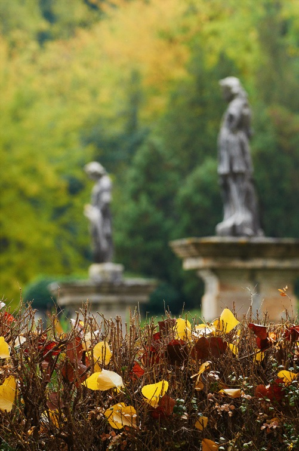

Serce, moje serce, bij o przeciwny wiatr
Jesień roku 1912. Podróżując w towarzystwie księżnej Marie von Thurn und Taxis, Rilke podziwia tchnące niezrównanym pięknem krajobrazy Wenecji Euganejskiej oraz magiczne wybrzeże Adriatyku.
Razem wybierają się do Grado, gdzie w tamtejszej katedrze zachwycają się bizantyjskimi relikwiarzami. Odwiedzają Saonarę, piękną willę hrabiny Valmarana, położoną opodal Padwy. Wyruszają ku Wzgórzom Euganejskim, zwiedzają Praglię oraz ogród jak ze snu w Valsanzibio, kryjący statuy, fontanny i labirynt.
Niezapomniane wrażenie pozostawia na Rilkem wizyta w Arquà, gdzie pochowany został Petrarka. „Dzień skłaniał się ku wieczorowi — wspomina księżna Taxis — niewymowna cisza zaległa okolicę. Prosty sarkofag z kamienia stał samotnie i dumnie przed mrocznym kościołem”.
Z końcem września poeta i księżna Marie opuszczają Saonarę i udają się do Brescii, by zobaczyć skrzydlatą Wiktorię, „starszą, sroższą siostrę Nike z Luwru”.
Przejeżdżając przez Weronę, księżna postanawia sprawić Rilkemu niespodziankę. Poleca zatrzymać się przed fasadą kościoła San Zeno i prowadzi zdumionego poetę ku chórowi za głównym ołtarzem, gdzie przed obrazem Mantegni recytuje mu własny, włoski przekład jego wiersza „Powrót Judyty”. Następnego dnia ruszają do Bergamo.
Kiedy późnym wieczorem wracają do Werony, poeta gorąco pragnie raz jeszcze zwiedzić Arenę, skąpaną w pozłocie pełni księżyca.
Doznaliśmy wszakże rozczarowania — wspomina księżna Marie — bowiem potężna brama była już zamknięta, o czym nie omieszkała nam donieść poczciwa, gruba, starsza kobieta, która pod jedną z arkad amfiteatru przechowywała klucz. Na pociechę zaproponowała nam kupno widokówek i fotografii.
Dostrzegłszy smutek na twarzy Rilkego, księżna Taxis wdaje się „z tym sympatycznym niewieścim cerberem” w rozmowę. Przywołuje całą swą elokwencję oraz najlepszy wenecki akcent (księżna Marie była rodowitą Wenecjanką).
Wyjaśniłam, iż poeta przybył z krainy barbarzyńców jedynie po to, by ujrzeć Arenę w poświacie księżyca, że przełożył Dantego i jest spokrewniony z „Can Grande”. (Wydaje mi się, że utrzymywałam nawet, iż wywodzi się od niego w linii prostej). Rilke, czując na sobie zachwycone spojrzenie życzliwej kobiety, najwyższym wysiłkiem woli starał się zachować powagę; dzięki Bogu słowo „poeta” ma jeszcze we Włoszech moc magiczną. Bramę otwarto, a my mieliśmy księżyc i Arenę tylko dla siebie, tak długo, jak tego pragnęliśmy. Wciąż widzę w myślach subtelną sylwetkę Serafico, stojącego wysoko na szczycie amfiteatru.
Fragmenty „Wspomnienia o Rainerze Marii Rilkem” pióra księżnej Marie von Thurn und Taxis w przekładzie autora.